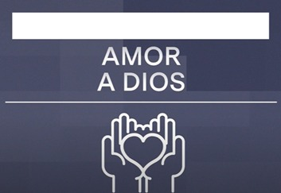

La experiencia de subir hasta el cerro de Cristo Rey en León, Guanajuato, fue verdaderamente inspiradora y emocionante. Desde el inicio del ascenso, rodeado de naturaleza y aire fresco, sentí una conexión profunda con el entorno. A medida que avanzábamos por el sendero, la vista panorámica de la ciudad de León se volvía cada vez más impresionante. Al llegar a la cima y contemplar la majestuosidad del monumento de Cristo Rey, experimenté una sensación de asombro y gratitud. Este viaje no solo fue un desafío físico, sino también una oportunidad para reflexionar y conectar con lo espiritual. La camaradería entre mis compañeros de excursión y la sensación de logro al alcanzar la cima hicieron de esta experiencia un recuerdo inolvidable y significativo.
Formación Católica
Competencia 1
Amor a Dios